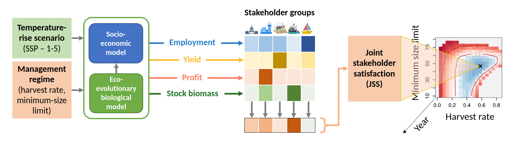

FisheRy is an R package to assess the impact of management choices on the sustainability of fisheries. FisheRy runs an agent-based age-size-structured biological model of the concerned fish, coupled to a socio-economic model of the fishery. It predicts the emergent properties of the fish population such as spawning stock biomass, as well as socio-economic outputs of the fishery, such as yield, employment, and net revenue. It can also compute satisfaction assessments of different stakeholders, such as convervationists, government, industry, and recreational users. It can thus be used to calculate safe operating spaces for fisheries, i.e., management regimes in which high joint stakeholder satisfaction is achieved.

Installation
Prerequisites
- Install the latest version of R.
- Install a C++ compiler that supports C++11. This is already available on Linux. On Windows, you will have to install Rtools.
- Install the devtools package
Installing fisheRy
You can install fisheRy directly from github. Currently, you should install from the develop branch, like so:
devtools::install_github(repo = "jaideep777/fisheRy", ref = "develop")The package can be loaded by
library(fisheRy)Development version
Latest development version can be found here: https://github.com/jaideep777/fisheRy/tree/develop
Usage
To solve a fishery model, you need to create three objects:
- A
Fish, which will serve as a prototype to construct all fish in the population. - A
Populationto simulate. - A
Simulator, which will simulate the population under different temperature and management settings (defined via two control parameters - minimum size limit and harvest proportion).
Parameters for the biological and socioeconomic models should be specified in a parameters file in ini format. The biological parameters should go in a section fish, and socioeconomic parameters should go in a section population. An example can be found in params/cod_params.ini.
The simulator allows for simultaneously simulating multiple populations with different temperature and control parameters, and also allows for calculation of utilties, stakeholder satisfaction, and joint stakeholder satisfaction.
For details on the usage, please see the tutorials here.
Documentaion
Detailed documentation and totorials are available [here](please see the tutorials here.
Authors and contact
Theory
- Jaideep Joshi (joshi@iiasa.ac.at)
- Ulf Dieckmann (dieckmann@iiasa.ac.at)
- Mikko Heino (mikko.heino@uib.no)
- Anna Shchiptsova (shchipts@iiasa.ac.at)
Code
Jaideep Joshi joshi@iiasa.ac.at
Acknowledgement
This project has received funding from the European Union’s Horizon 2020 research and innovation programme under grant agreement No 820989 (project COMFORT, Our common future ocean in the Earth system – quantifying coupled cycles of carbon, oxygen, and nutrients for determining and achieving safe operating spaces with respect to tipping points). The work reflects only the author’s/authors’ view; the European Commission and their executive agency are not responsible for any use that may be made of the information the work contains.